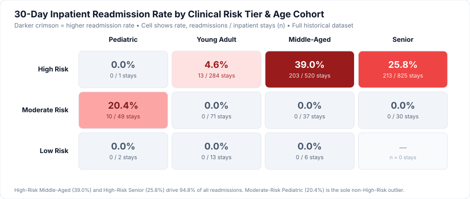

The Deliverable
Four executive views from the Tableau workbook
Portable analytical views backed by DuckDB SQL ETL and verified against exact computed totals in data/analysis_summary.json.

View 1 · Annual Volume & Readmission Trend (2011–2020) — Urgent care channel growth paired with chronic 15% readmission goal breaches

View 2 · Top 10 Clinical Drivers of Readmissions — 97.9% oncology concentration led by NSCLC/Breast (351) and Stage 1 SCLC (96.8% rate)

View 3 · Risk Tier × Age Cohort Heatmap — 94.8% concentration in High-Risk Middle-Aged (39.0%) and Senior (25.8%) plus Moderate Pediatric signal

View 4 · Payer Coverage vs. Readmission Quadrant — Medicare & Self-Pay exposure vs. optimal quadrant performers (Cigna & UnitedHealthcare)